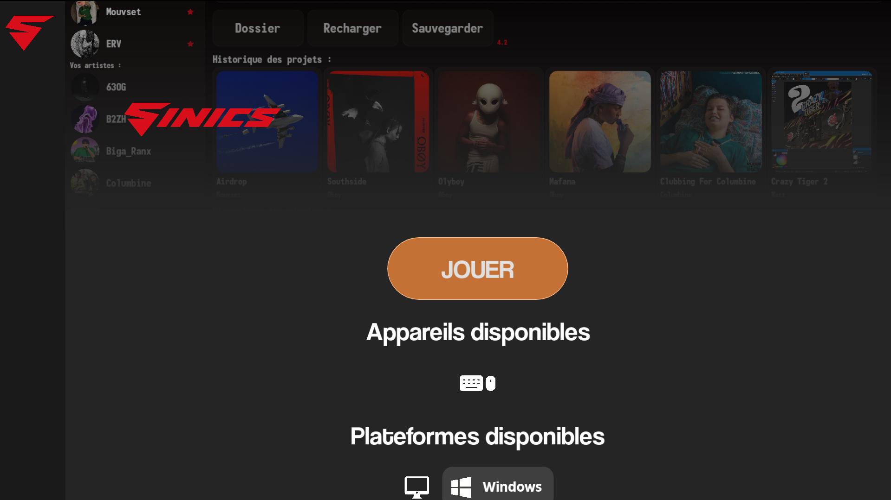

Matt Games Launcher
Un seul launcher pour tout le catalogue
Installez, mettez à jour et lancez chaque jeu Matt Games depuis une interface unique. Aucune plateforme tierce requise.

Fonctionnalités
Ce que fait le launcher
01
Bibliothèque unique
Tous les jeux du studio réunis dans une même interface, mise à jour automatiquement.
02
Installation en un clic
Le jeu sélectionné est téléchargé et installé directement, sans étape supplémentaire.
03
Mises à jour automatiques
Le launcher détecte les nouvelles versions et propose la mise à jour dès qu'elle est disponible.
Windows
Télécharger le Matt Games Launcher
Dernière version disponible pour Windows.
Télécharger pour Windows